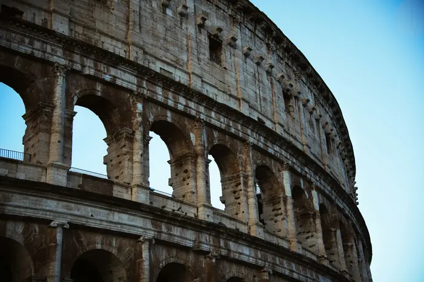
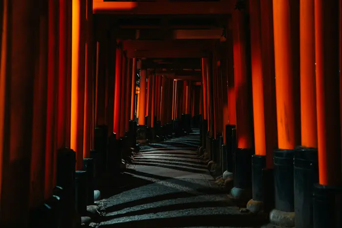
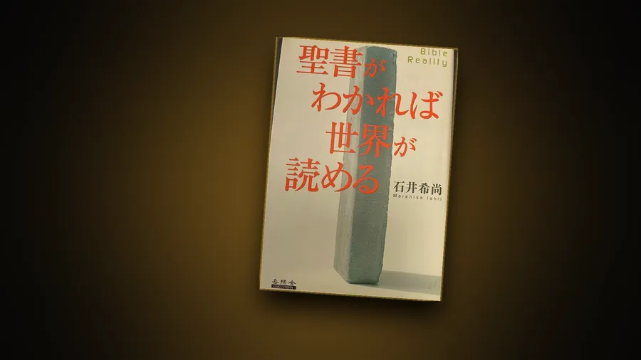
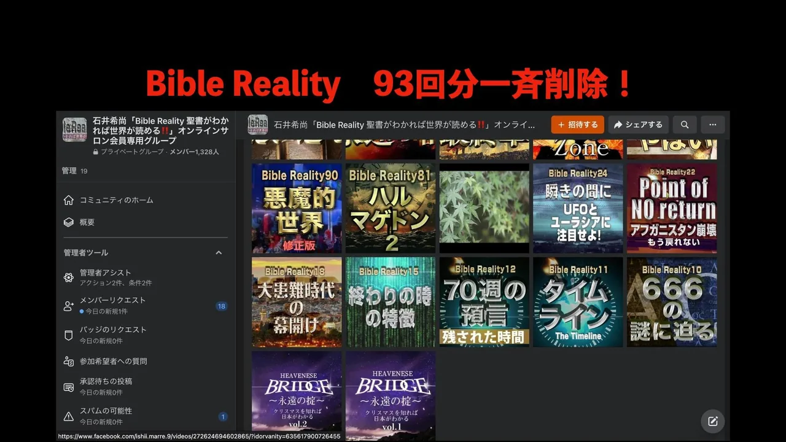
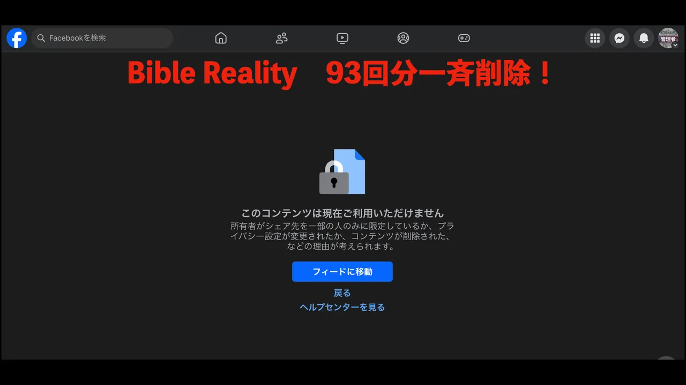
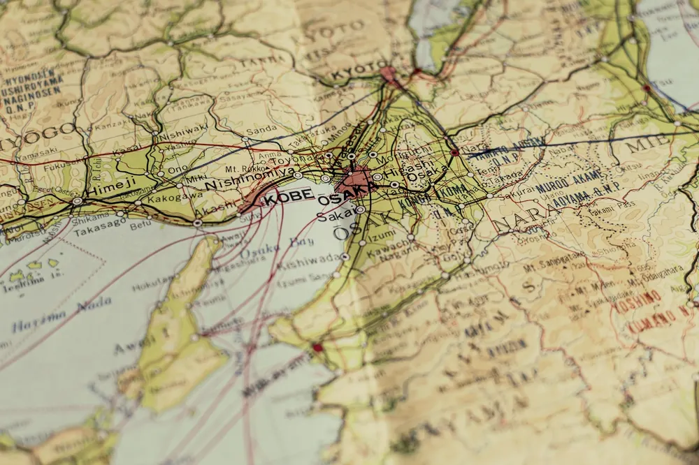
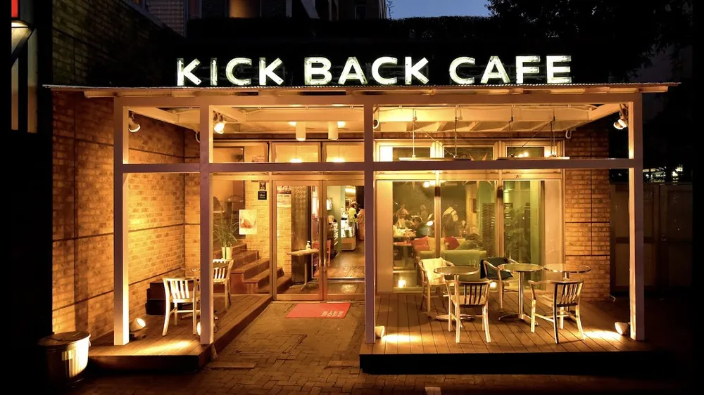
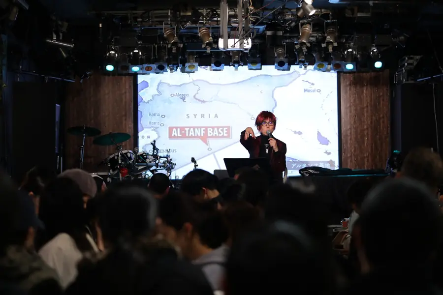
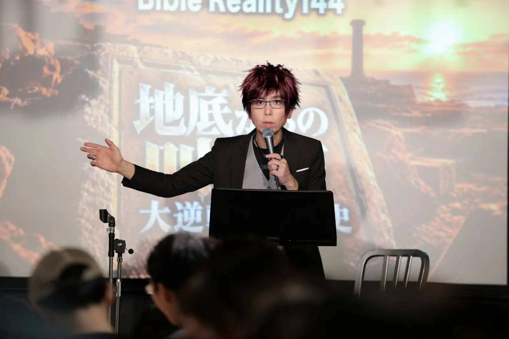
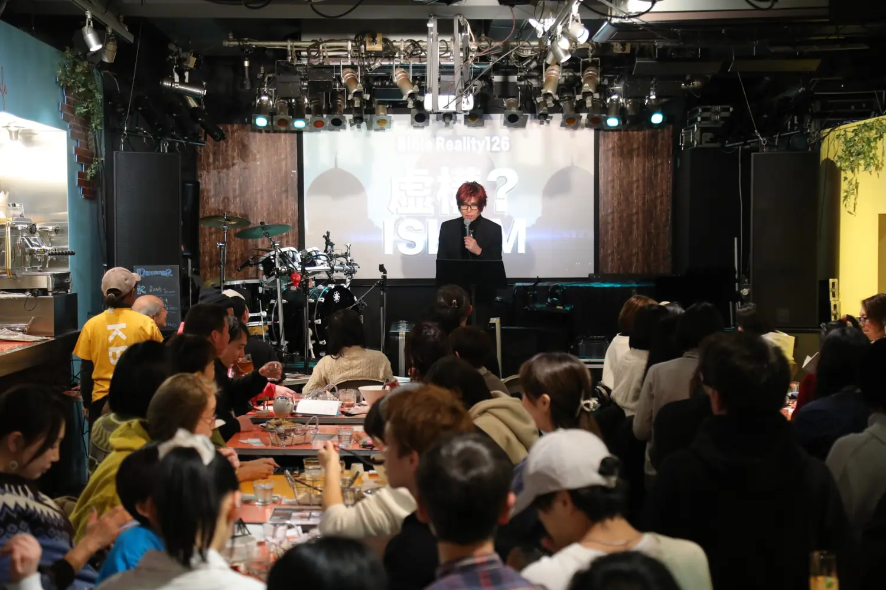

事件の翌日に、世界の報道とは真逆の発言。
2001年9月11日の事件翌日。おそらく世界で最も早く、「首謀者はオサマ・ビン・ラディンではない」と断言しました。
いま、あなたが追いかけているのは、
都市伝説ですか？
動画を何本見ても、結局、何が本当なのかわからない。
なぜなら、真実を読み解くための「元の資料」を知らないから。
テレビも学校も教えてくれなかった、世界の見方。
その鍵は、聖書という一次資料にある。
Check
当てはまるものを、タップしてください。
当てはまるものを、タップしてください。
Why Bible Reality
ニュースを追うほど、不安だけが増えていく。そんな毎日から、抜け出しませんか。
情報に振り回される側から、時代を読み解く側へ。
テレビや学校では教えてくれない世界の見方を、日本一詳しく説明することを目指します。
誰にも話せなかった「世の中への違和感」を、分かち合える。
それだけで、毎日の気持ちが明るく変わります。
One Axis
バラバラに見える世界の出来事の背後には、
歴史を貫くつながりがある。


Topics
気になるテーマを、タップしてみてください。
UFO、スピ、陰謀論、神道、世界情勢、政治、ユダヤ問題、シオニズム、パレスチナ問題、グローバリズム、宗教、カルト、移民、イスラム。
幅広いテーマを、すべて一次資料にもとづいて徹底解説します。
Method
世界のベストセラー、聖書には「読み方」があります。
文脈を無視しない解釈学の基本に立ち、神道、宗教、世界情勢、さらには都市伝説まで。あらゆるテーマを独自の視点から読み解く講座です。
書かれていることを、書かれているままに読みます。
ほかの箇所と照らし合わせ、聖書自身に意味を語らせます。
いま起きている世界の出来事を、その物差しで読み直します。
Lecturer
聖書＝キリスト教ではない。
キリスト教は、信じなくていい。
でも、聖書の中身を知ると世界が読める。
Profile
10代の頃、序列主義の教育体制に疑問を抱き、日本初のフリースクール「寺子屋学園」を設立。
全米フリースクール連合議長パット・モンゴメリー女史との対談（続・教育に強制はいらない/一光社/1982年掲載）や、立松 和平（作家）、保坂 展人（元 衆議院議員）との対談（今・人間として/径書房1982年創刊第3号掲載）等、教育界において活発な活動を展開。
教育問題と並行して音楽活動にも力を注ぎ、新人歌手のバックなどのキャリアを積み、91年、ポリドール系のレーベルよりデビュー。
93年渡米し、一般カウンセリング・プリマリタル・カウンセリング・聖書学などを学び、インターンを経て牧師になる。
2000年に出版した処女作「この人と結婚していいの？」（新潮社）が24万部を超えるベストセラーに。著書多数。
アーティスト/プロデューサーとして、HEAVENESEを率い、日本国内のみならず、海外においても精力的に活動を展開している。
現在は、フリースクール代表をはじめ、牧師・カウンセラー・カフェオーナー・ミュージシャン・作家・企業セミナー講師など多岐に渡りKumikoと夫婦二人三脚で精力的に活躍。
Track Record
これまでの世界情勢の分析が正確だったかどうかは、ご自身で確かめられます。
講座は、すべてアーカイブに残っています。
2001年9月11日の事件翌日。おそらく世界で最も早く、「首謀者はオサマ・ビン・ラディンではない」と断言しました。

BOOKオサマ・ビン・ラディンが首謀者ではないという結論から始まる書籍『聖書がわかれば世界が読める』（2002年2月10日出版）は、「公安」の圧力を受けました（詳細は講座内であかされています）。
「ロシアは、必ずウクライナに侵攻する」。元ウクライナ大使さえ「しない」と言っていた中で、そう断言しました。そして、その戦争が長期化することも、あらかじめ断言しました。
関連する講座：第33回（2022.2.9）「秒読み開始！エゼキエル戦争 プーチンはゴグなのか？」、
ハマスとイスラエルの情勢が長期化することも、あらかじめ断言していました。
関連する講座：第73回「50年目のヨムキプル戦争の真相／
Latest
横にスワイプして、直近の回をのぞいてみてください。
Banned


Archive
2020年9月の第1回から最新回まで、すべてのアーカイブを、いつでも好きなだけ。
講座は、Facebookの非公開グループで視聴できます。
講座の時間に都合がつかなくても、あとからいつでも視聴できます。
通勤や休日のすきま時間など、自分のペースで、少しずつ見られます。
まずは入門の第1回から第5回を。基本がわかったら、気になるテーマの回から見ても大丈夫です。
1か月だけ入って、やめてもかまいません。
見逃した回も、あとで取り戻せる。それが、アーカイブ見放題です。
Online × Real

ONLINEFacebookの非公開グループで講座に参加し、アーカイブをいつでも視聴できます。

REAL会場のKICK BACK CAFE（東京都調布市）で、リアルな講座を。会員は入場無料で観覧できます。
とりあえず会場に来てみて、参加するかどうかを考えるのもOKです。
まずは1回だけ参加してみるのも、もちろんOKです。



お食事を楽しみながら、講座をご観覧いただけます。
メニューの一例です。内容は、時期により変わります。（写真：KICK BACK CAFE公式サイト）
Price
割引期間、延長中。
お支払いはクレジット決済、銀行振込、会場での現金払いに対応。退会はメールで随時受け付けています。
FAQ
Free
まずは無料で、雰囲気を確かめてみてください。
毎週日曜20:00から、YouTubeで「HEAVENESE style」を配信しています。
日本のテレビでは流れない世界のニュースや、教科書では習わない日本の偉人たちの生き方を、毎週ご紹介しています。